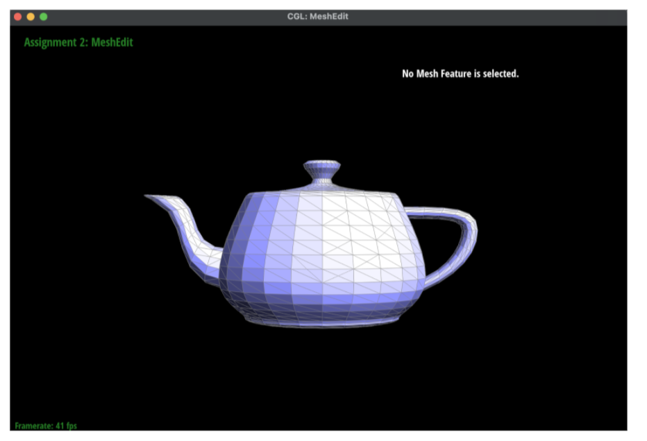

In this project, we implemented a rasterization pipeline. Given svg files, we would render the images and provide additional antialiasing and texture support. We essentially implemented the basic rendering principles in order to draw more complex shapes on the screen. We also integrated the ability to map textures onto the screen. I thought this project was a great introduction to implementing the graphics principles we’ve been studying in class. It’s one thing to walk through an algorithm on slides, but even better to pull your hair out over segfaults because you’re stepping outside of the sample buffer. What I found interesting about this project is how relatively simple rendering algorithms can be. As a computer user, graphics always seemed like a mystery. However, I’m looking at my computer screen completely differently knowing that it’s mainly just a bunch of relatively simple polynomial shapes.
We used 6 line tests and a nested for loop to implement rasterization. We created our own “inside” test to check if a pixel was inside a triangle. We added a method that took in 2 points that define the line, and then a third point to see which side it was on. This way, we could pass in points based on whichever winding order was being used. If all three points were > 0 based on the line equation, we returned that the point was inside the triangle. We also returned that the point was inside of the triangle if it was on a top or left edge of the triangle. We looped through all of the pixels inside the bounding box of the triangle [(min(x), min(y)), (max(x), max(y))]. We checked if the center of each pixel was inside of the triangle using the method I described above. If it was inside, we filled the pixel with the color. Our algorithm is no worse than checking the bounding box of the triangle because we literally only check the bounding box of the triangle described by the three points given.
For each pixel in the bounding box, we sampled the pixel n x n times, where n is the square root of the sample rate. So, for the n regions in the pixel, we checked whether that spot was inside the bounding box, and if it was, we would add that subsection of the pixel into our sample buffer. Next, we average the color from the n samples for each pixel to find the final color for that pixel, which we add to our frame buffer. Supersampling is a useful way to reduce aliasing. It reduces the appearance of jags/pixelated edges. However, it requires us to use more memory because we must sample the image at more points. We modified the rasterization pipeline by taking more samples per pixel and allocating more memory to the sample_buffer to store all of our samples. Supersampling helped us antialias our triangles by allowing us to smooth edges by taking more samples and averaging out the colors between the samples. Because we averaged, we were able to decrease the frequency of the svg and antialias our triangles.

I decided to give Cubeman a few extra pounds (widen torso), rotate his head, and make him waving. I also decided to change his color to blue for a sleek new style.
Barycentric coordinates are useful for rasterization because they relate closely to triangles. You can represent any point inside a triangle (including it’s edges or vertices) by using three scalars that indicate the point’s distance to each of its three vertices. Barycentric coordinates are normalized, meaning that the three scalars (let’s call them a, b, c) add up to 1: a + b + c = 1. Here is an example of a triangle with vertex A colored red, B colored blue, and C colored green. If we’re using barycentric coordinates to compute vertex A, we know that the color of A will be the color associated with the vertex. We can show this using the following formula:
(α, β, γ) = (1, 0, 0)
(x, y) = αA + βB + γC
= A
The same logic follows for points B and C. For points not on the vertices, we can interpolate the color data to get the value at that point. This idea is shown in the following image. The seamless blending of colors across the triangle indicates interpolation.
Pixel sampling is sampling either the nearest corresponding texel in a texture map to a pixel on the screen. This can also be done bilinearly by taking a weighted average of the 4 samples surrounding the corresponding texel. We implemented pixel sampling by writing a function for both bilinear sampling and nearest sampling. For nearest, we scaled the pixel to the size of the texture map, rounded the coordinates and got the color of the texel at that coordinate. For bilinear sampling, we scaled the pixel to the size of the texture map, linearly interpolated the horizontal components of the 4 nearest texels, and then linearly interpolated the vertical component of the 4 nearest texels to get a weighted average. We then filled the pixel with that color found from either the nearest method or the bilinear method.


With the bilinear interpolation method, the coast of Greenland is a little blurred but I think represents the actual texture better. With the supersample rate set to 1, the bilinear pixel interpolation creates a better representation of the actual texture. The same occurs for the supersample rate of 16. There will be a large difference between the two methods when the supersample rate of the bilinear interpolation method is high and the nearest pixel sampling rate is low. With the high supersampling rate and bilinear pixel interpolation, the color of the pixel will be averaged out with surrounding supersamples, so there will be more data points and more averaging overall, providing more data to represent the image more accurately.
Level sampling is storing various mipmap levels and assessing in which situation they’ll be needed to represent the image with an appropriate resolution. A lower mipmap level will be closer to a 1:1 representation of the texture map whereas a higher level mipmap will have a lower resolution. We implemented it by checking the method of sampling - zero, nearest, or bilinear - and pixel sampling accordingly based on the level.
We’ll get the best anitaliasing using a bilinear method of both level sampling and pixel sampling and a high supersampling rate. This will be more computationally expensive than any other combination of level and pixel sampling. If you need a low memory overhead, using a low supersampling rate will reduce your memory usage because you won’t need to expand the sample buffer. You can also do no level sampling to reduce the memory overhead because mipmaps take up more memory. If you need your program to be fast, implementing the simplest forms of rasterization and sampling will be necessary: 1 sample per pixel, level zero, and nearest pixel sampling.
Here's a cool bugart!